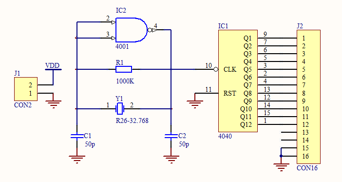

实习报告 · 软件实验：Protel99（Altium designer 6.9）
一、实验目的
1.掌握电路原理图的设计步骤
2.掌握原理图报表文件的生成方法与作用
3.熟悉元器件库编辑器及其原理
4.学会使用印制电路板编辑器，达到自动布线画电路板比较熟悉的程度
二、实验内容
1.电路原理图的绘制
实验在仿真软件Altium designer 6.9上进行。绘制电路原理图大体分为四个步骤，新建原理图文件、放置元件、设置元件参数、画线。 1) 新建原理图文件
操作步骤:
- 打开 AD 主界面
- 依次选择菜单 File > New > Schematic
- 左侧 File View 面板将出现:
- 工程 Free Documents
- 文件夹 Source Document
- 原理图文件 Sheet1.SchDoc
2）放置元件
明确并在元件库中寻找电路中需要放置的元件。寻找元件有两条思路。 方法一：浏览库
- 菜单 Design > Browse Library…，右侧弹出 Libraries 面板。
- 点击 Libraries… 按钮，出现 Available Libraries 窗口。
- 点击 Install…，加载常用库：Miscellaneous Connectors.IntLib、Miscellaneous Devices.IntLib。
- 点击 Close 关闭窗口。
- 在下拉框选择库，用上下键预览并定位所需元件。
方法二：搜索库
- 点击 Search…，打开 Libraries Search 窗口。
- 输入元件名。
- 选择 Libraries on path，设置 Path，遍历指定目录下所有库进行搜索。
方法三：自建元件库
- 菜单 File > New > Library > Schematic Library，新建 Schlib1.SchLib。
- 选中该文件，菜单 Tools > New Component 创建元件。
- 编辑完成后保存，作为库直接加载使用。
3）设置元件参数
元件需要设置的参数一般有三个，Designator（元件名）、Comment（元件注释）、Footprint（元件封装）。按照需要分别设置就可以了。
4）画线
原理图操作界面中，点击菜单栏中Place，选择Wire，鼠标光标会变成十字形，然后就可以根据需求按照网格放置线条了。
2.网络表的生成与作用
1）网络表的生成：画好原理图后，点击菜单栏中的Design，选择Netlist for document>Protel，在原理图同目录就会生成Sheet1.NET文件。
2）网络表的作用：网络表包含了原理图中的所有元件以及元件参数，包括值的大小和封装信息等，用于在PCB电路的设计中导入元件以及校验元件信息。
3.PCB（印制电路板）的绘制
绘制PCB可以分为两个步骤，导入元件和布线。
1）导入元件
点击菜单栏中的Project，选择Show Differences…，会弹出Choose Docuents To Compare窗口，在下角勾选Advanced Mode选项，窗口会变成两栏。左边一栏选中已经保存过的PCB文件，右边一栏选择刚才生成的网络表文件，点击OK，就会出现工程差异的一个比对窗口，右击任一列表中的文件，选择Update All >> PCB Document [PCB1.PcbDoc]选项，然后点击窗口左下角Create Engineering Change Order…按钮，就出现了Engineering Charge Order窗口。
在出现的窗口中点击左下角的Execte Charges执行更改，之后就会出现一个执行情况统计的窗口。如果窗口中有错误项，就需要关闭窗口，根据错误提示更改、调整出现问题的元件。如果没有错误项，那么所有元件就成功地导入PCB文件中了。
自定义放置元件的位置，然后点击Place，选择Line，画置印刷版的边界，限制电路板的大小，不然在自动布线的时候软件会卡死。
2）布线
点击菜单栏的Auto Route，选择All，弹出窗口中保持默认选项选择OK，软件就可以在5秒之内自动为PCB印制板布线。
AD在自动布线的时候不需要切换到Keep-Out Layer画布也可以实现双面板的布线，因为在弹出窗口中会选择布线格式。
最后检查PCB是否有错误。

应付作业的内容，先在电脑上写的，就顺手发上来。对软件的学习没有借鉴意义。